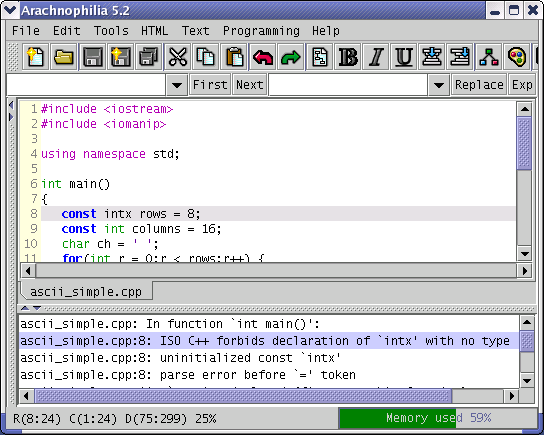

The features to be described are most often used with compilers, but any program can be activated by, and can interact with, Arachnophilia.
In Arachnophilia, program activation uses one of two system macros, depending on the requirements:
- The first is more suited to compilers that might return error messages. [SystemExec:arg] causes a named program to be launched with optional additional arguments. Here is a typical macro text for this command:
[Save][SystemExec:g++ [FileName]]
In this macro, the displayed file is saved to its already established storage location, then a popular C++ compiler is launched with the file's name as an argument (remember that Arachnophilia macros can be nested within other Arachnophilia macros). If the compiler produces any error messages, they will be listed at the bottom of the document panel, and the document's editing cursor will automatically be placed on the first reported error line. Like this:

The above macro would be used for interactive programming — after some changes to the source file, the operator would simply activate this macro with a keystroke. If any errors were reported, they could be corrected interactively (the "feedback panel" shown in the image above can be clicked to move to each error in turn) and the macro could be activated again.
- Another command -- [SystemConsole:arg] — is more suitable when some interaction with a program is anticipated, and a terminal window is needed. Here are example macros:
(unix) [SystemConsole:bash -i]
(Windows) [SystemConsole:cmd /k]
These commands launch shell interpreters on the respective platforms, using a simple interactive terminal, launched in a separate window, to handle I/O.